New illustrated hills New height control, shared painted grass and consistent lighting produce continuous rolling relief at2×/4×. Isolated hills have a small smooth inner height cue when existing relief is weak.
Provisional offline candidates. Default applies only at phase0,0 with six grass neighbors. All64 neighbor masks at phase0, all32 isolated phases and the fixed fixture contexts are below. Runtime selection, other transitions, full maps, fractional zoom and release acceptance remain open.
Review and evidence · Geometry and phase contract · Terrain · Manifest
Isolated default, phase0,0 summer-isolated-parity0 summer-isolated-parity1 summer-homogeneous-parity0 summer-homogeneous-parity1 summer-frontier-parity0 summer-frontier-parity1 summer-clearing-parity0 summer-clearing-parity1 summer-clearing-parity1-2x.png 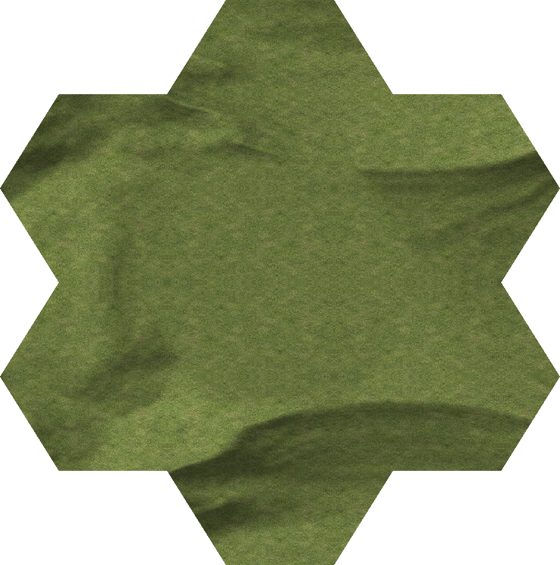
summer-clearing-parity1-4x.png hills · phase[0 0] · context9297a8ee8a67 NE SE S SW NW N: [hills grass grass grass grass grass]
9297a8ee8a670b8cd560172e822f6a31ab25949dbadefea5a600fa1e65307ae4-2x.png 9297a8ee8a670b8cd560172e822f6a31ab25949dbadefea5a600fa1e65307ae4-4x.png hills · phase[0 0] · context6b660bbae821 NE SE S SW NW N: [grass hills grass grass grass grass]
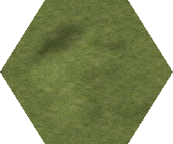
6b660bbae8210beec5f2cfdf1e4276a8cb66981c4dbae1def42a97392ce3937f-2x.png 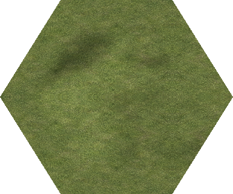
6b660bbae8210beec5f2cfdf1e4276a8cb66981c4dbae1def42a97392ce3937f-4x.png hills · phase[0 0] · contextae935ca200f0 NE SE S SW NW N: [hills hills grass grass grass grass]
ae935ca200f0d5f2aefaa2011601686341b420b413e8e726565420f1b6b517da-2x.png 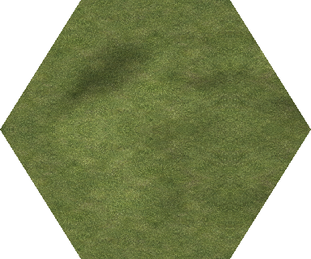
ae935ca200f0d5f2aefaa2011601686341b420b413e8e726565420f1b6b517da-4x.png hills · phase[0 0] · contexta01cbb4377b7 NE SE S SW NW N: [grass grass hills grass grass grass]
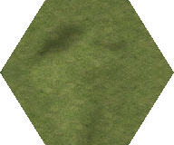
a01cbb4377b75325dcb29536ecc58ae3e75258cf0f82555f1628f9894a70919e-2x.png 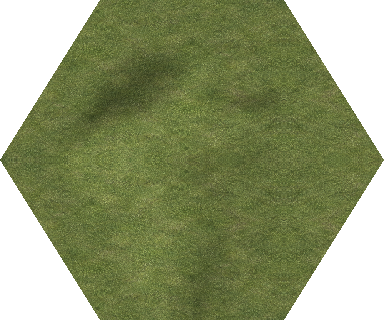
a01cbb4377b75325dcb29536ecc58ae3e75258cf0f82555f1628f9894a70919e-4x.png hills · phase[0 0] · context51a4f0501864 NE SE S SW NW N: [hills grass hills grass grass grass]
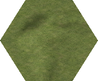
51a4f0501864ff3a30fae2fd81d4bebd5ff587a265129872275d7eb8ca63f87c-2x.png 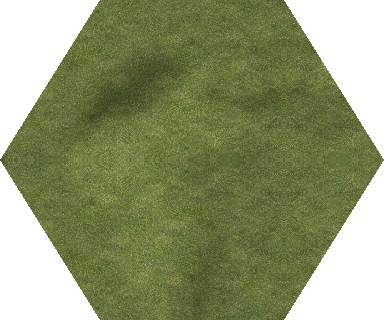
51a4f0501864ff3a30fae2fd81d4bebd5ff587a265129872275d7eb8ca63f87c-4x.png hills · phase[0 0] · context14b90cd2016e NE SE S SW NW N: [grass hills hills grass grass grass]
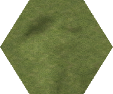
14b90cd2016ed17b0c259c02ce7e9ef6ee98734b9ffb79f52b44a42d76c6e2b6-2x.png 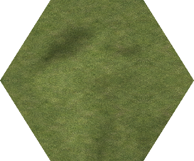
14b90cd2016ed17b0c259c02ce7e9ef6ee98734b9ffb79f52b44a42d76c6e2b6-4x.png hills · phase[0 0] · context434e15d81018 NE SE S SW NW N: [hills hills hills grass grass grass]
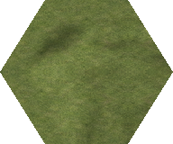
434e15d81018cd4f6cb2a991d08c4b11801920be034500483cb17b8e03edf25c-2x.png 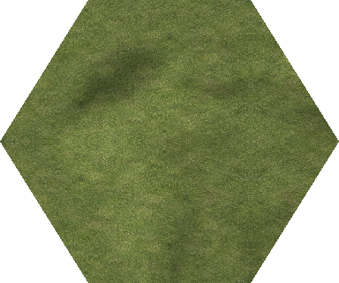
434e15d81018cd4f6cb2a991d08c4b11801920be034500483cb17b8e03edf25c-4x.png hills · phase[0 0] · context1b1d9fbbed24 NE SE S SW NW N: [grass grass grass hills grass grass]
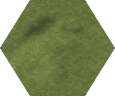
1b1d9fbbed24c322badd3178f295f6626687d7064a53d75cc8e26f05999d51f0-2x.png 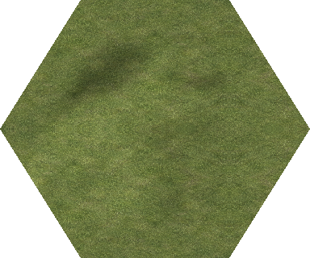
1b1d9fbbed24c322badd3178f295f6626687d7064a53d75cc8e26f05999d51f0-4x.png hills · phase[0 0] · contextac94ed393a58 NE SE S SW NW N: [hills grass grass hills grass grass]
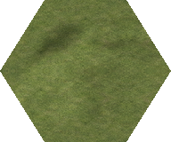
ac94ed393a58bf689f74556eb4e35372952afe80650bf3df27ab519a5cf64b74-2x.png 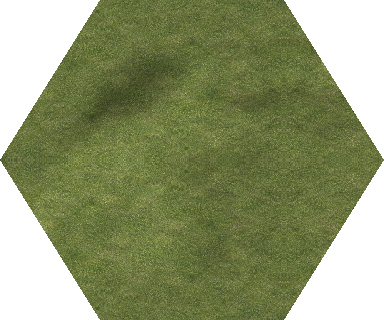
ac94ed393a58bf689f74556eb4e35372952afe80650bf3df27ab519a5cf64b74-4x.png hills · phase[0 0] · context8b53e7fc9026 NE SE S SW NW N: [grass hills grass hills grass grass]
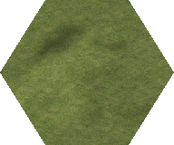
8b53e7fc902624eada586bb99d428323e0cf2d617e04f651bd8336ad1cd566ca-2x.png 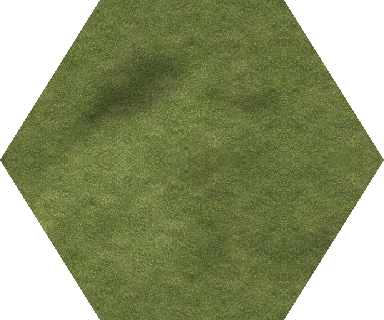
8b53e7fc902624eada586bb99d428323e0cf2d617e04f651bd8336ad1cd566ca-4x.png hills · phase[0 0] · context10a2954c828e NE SE S SW NW N: [hills hills grass hills grass grass]
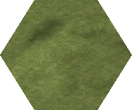
10a2954c828ec6cda2462ab3175e83e5e0f2263956b66ff7fb5667dcb69ad646-2x.png 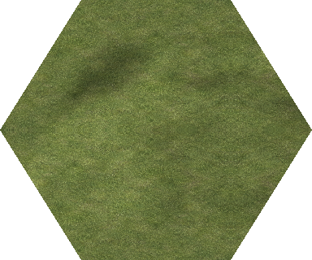
10a2954c828ec6cda2462ab3175e83e5e0f2263956b66ff7fb5667dcb69ad646-4x.png hills · phase[0 0] · context923fb743d7d4 NE SE S SW NW N: [grass grass hills hills grass grass]
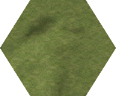
923fb743d7d47aae6586556fc9927096573f08ed93d331be9d12d85241bc038c-2x.png 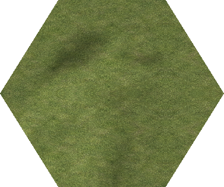
923fb743d7d47aae6586556fc9927096573f08ed93d331be9d12d85241bc038c-4x.png hills · phase[0 0] · context1e17c2010a7e NE SE S SW NW N: [hills grass hills hills grass grass]
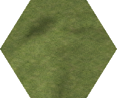
1e17c2010a7eff9de6427311c0a7755fa80cf609f4a1f60e7a289050c98015dc-2x.png 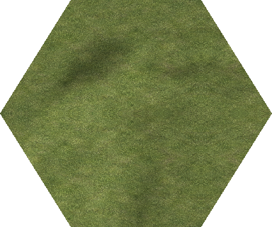
1e17c2010a7eff9de6427311c0a7755fa80cf609f4a1f60e7a289050c98015dc-4x.png hills · phase[0 0] · context3250633d35c4 NE SE S SW NW N: [grass hills hills hills grass grass]
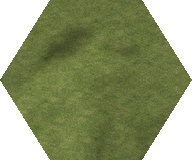
3250633d35c4457e63e8460f7c17ecb3848500939d30acf96553fb41f34198dd-2x.png 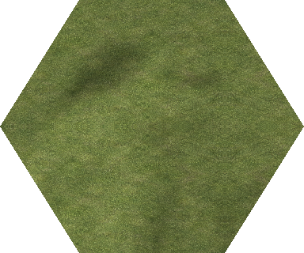
3250633d35c4457e63e8460f7c17ecb3848500939d30acf96553fb41f34198dd-4x.png hills · phase[0 0] · context6245eee8c7b9 NE SE S SW NW N: [hills hills hills hills grass grass]
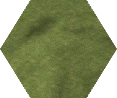
6245eee8c7b91ce8426c71c1292ebabfb526f83d2f942afaa7e0a9f70c2de1d0-2x.png 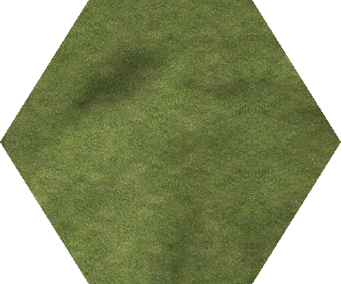
6245eee8c7b91ce8426c71c1292ebabfb526f83d2f942afaa7e0a9f70c2de1d0-4x.png hills · phase[0 0] · context2a67c177c643 NE SE S SW NW N: [grass grass grass grass hills grass]
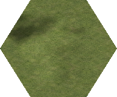
2a67c177c643e6541790611f3d0c42494eae88eadab83317af8aa31dfb507e80-2x.png 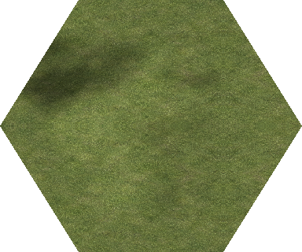
2a67c177c643e6541790611f3d0c42494eae88eadab83317af8aa31dfb507e80-4x.png hills · phase[0 0] · context3c187fc2693d NE SE S SW NW N: [hills grass grass grass hills grass]
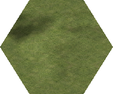
3c187fc2693d6a6929c00af9c3c87b40bf24924b81b0e4b354c6f90ef43b678d-2x.png 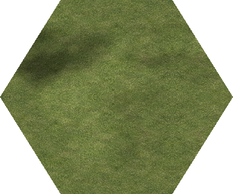
3c187fc2693d6a6929c00af9c3c87b40bf24924b81b0e4b354c6f90ef43b678d-4x.png hills · phase[0 0] · context34141a9a4a6c NE SE S SW NW N: [grass hills grass grass hills grass]
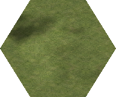
34141a9a4a6c2246b28a7d68b338b1bae0f61346bdfbbc6e761d6c0b4c77188a-2x.png 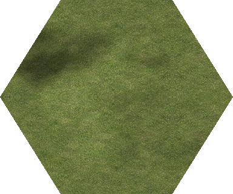
34141a9a4a6c2246b28a7d68b338b1bae0f61346bdfbbc6e761d6c0b4c77188a-4x.png hills · phase[0 0] · context748545375c20 NE SE S SW NW N: [hills hills grass grass hills grass]
748545375c20a39baea878047ea3b0c8531c05c30f156b780d0f9f072a1b1251-2x.png 748545375c20a39baea878047ea3b0c8531c05c30f156b780d0f9f072a1b1251-4x.png hills · phase[0 0] · context7f962ed9b3e4 NE SE S SW NW N: [grass grass hills grass hills grass]
7f962ed9b3e48cedb0b9597364291cb35ce6a2d167fbe2690d1d3afb3b6b03fb-2x.png 7f962ed9b3e48cedb0b9597364291cb35ce6a2d167fbe2690d1d3afb3b6b03fb-4x.png hills · phase[0 0] · context068078041a1f NE SE S SW NW N: [hills grass hills grass hills grass]
068078041a1f5fa5c0c7e7d5e954c8a5d6dad0a20cadbec7cbb7e014223a7a6c-2x.png 068078041a1f5fa5c0c7e7d5e954c8a5d6dad0a20cadbec7cbb7e014223a7a6c-4x.png hills · phase[0 0] · context5f30a6444853 NE SE S SW NW N: [grass hills hills grass hills grass]
5f30a64448536e63e8293a5fe29a78ceac1b0f6e110404be342a98578aa71486-2x.png 5f30a64448536e63e8293a5fe29a78ceac1b0f6e110404be342a98578aa71486-4x.png hills · phase[0 0] · context389194f63dd3 NE SE S SW NW N: [hills hills hills grass hills grass]
389194f63dd3b2481d04321f70be4578965b617862da53f0cf109fd5d78d9dcd-2x.png 389194f63dd3b2481d04321f70be4578965b617862da53f0cf109fd5d78d9dcd-4x.png hills · phase[0 0] · contextce5b6d57b341 NE SE S SW NW N: [grass grass grass hills hills grass]
ce5b6d57b341d2a9b8b34d57659d0b0ff6d4cc8ec726add08c77cb75d3701b07-2x.png ce5b6d57b341d2a9b8b34d57659d0b0ff6d4cc8ec726add08c77cb75d3701b07-4x.png hills · phase[0 0] · contextb99f8b613cb7 NE SE S SW NW N: [hills grass grass hills hills grass]
b99f8b613cb7b9f29e8398b26d5c9f6efa33ac2c4924a74b7a63cd208aa8daec-2x.png b99f8b613cb7b9f29e8398b26d5c9f6efa33ac2c4924a74b7a63cd208aa8daec-4x.png hills · phase[0 0] · contextf1569e7516e7 NE SE S SW NW N: [grass hills grass hills hills grass]
f1569e7516e7ebc84f138a95bab937a9f6aa83649eed7261cc0eaa5829f1135a-2x.png f1569e7516e7ebc84f138a95bab937a9f6aa83649eed7261cc0eaa5829f1135a-4x.png hills · phase[0 0] · contextc3ed186773f7 NE SE S SW NW N: [hills hills grass hills hills grass]
c3ed186773f74479778de04bbab06ed80179ed7d98db1b9892ddd92fb0309a21-2x.png c3ed186773f74479778de04bbab06ed80179ed7d98db1b9892ddd92fb0309a21-4x.png hills · phase[0 0] · contextf4454293165e NE SE S SW NW N: [grass grass hills hills hills grass]
f4454293165ee704166c982d83b8b87914eac8c6dddbb08a6b3e027db171b4fa-2x.png f4454293165ee704166c982d83b8b87914eac8c6dddbb08a6b3e027db171b4fa-4x.png hills · phase[0 0] · contexte619e7ca3159 NE SE S SW NW N: [hills grass hills hills hills grass]
e619e7ca31595dd365f0bfe5d066afea05f15b0dba523958a25e32e1593b58c8-2x.png e619e7ca31595dd365f0bfe5d066afea05f15b0dba523958a25e32e1593b58c8-4x.png hills · phase[0 0] · context45463672c3a9 NE SE S SW NW N: [grass hills hills hills hills grass]
45463672c3a9c8efb129cfc5b53b716dfff6bff127dd7fdfe04fce00786b071b-2x.png 45463672c3a9c8efb129cfc5b53b716dfff6bff127dd7fdfe04fce00786b071b-4x.png hills · phase[0 0] · contextdb2dc550154e NE SE S SW NW N: [hills hills hills hills hills grass]
db2dc550154e4403e912b1f184b340f694a1ccb17cbd94ec6ccbd2f68021bac3-2x.png db2dc550154e4403e912b1f184b340f694a1ccb17cbd94ec6ccbd2f68021bac3-4x.png hills · phase[0 0] · contexte38fdbec7670 NE SE S SW NW N: [grass grass grass grass grass hills]
e38fdbec76706cd083ecf7ed52485989bdd8bc9a097fa8c450cc6f671eef9fff-2x.png e38fdbec76706cd083ecf7ed52485989bdd8bc9a097fa8c450cc6f671eef9fff-4x.png hills · phase[0 0] · contextf58cae3bd4e8 NE SE S SW NW N: [hills grass grass grass grass hills]
f58cae3bd4e801a50d9f96876595806bccde4644793ad007b23ae7ce5fb67db4-2x.png f58cae3bd4e801a50d9f96876595806bccde4644793ad007b23ae7ce5fb67db4-4x.png hills · phase[0 0] · context7d51f514ecaf NE SE S SW NW N: [grass hills grass grass grass hills]
7d51f514ecafdff4e20e2d742d0c370c0e6bcb4be99a0394eb50361de840411c-2x.png 7d51f514ecafdff4e20e2d742d0c370c0e6bcb4be99a0394eb50361de840411c-4x.png hills · phase[0 0] · context131220725620 NE SE S SW NW N: [hills hills grass grass grass hills]
131220725620b3d7b3825b28ee0d33d56d28e28e05594fd01cc411c0c50468af-2x.png 131220725620b3d7b3825b28ee0d33d56d28e28e05594fd01cc411c0c50468af-4x.png hills · phase[0 0] · context1e9fa01f903d NE SE S SW NW N: [grass grass hills grass grass hills]
1e9fa01f903dc76adf3add378e323a34743c7d7871910c35cf4165f73ff69548-2x.png 1e9fa01f903dc76adf3add378e323a34743c7d7871910c35cf4165f73ff69548-4x.png hills · phase[0 0] · context7d3c9c25605e NE SE S SW NW N: [hills grass hills grass grass hills]
7d3c9c25605ed2f3d7195f5cd57957cbbe7f5f2c5515ebe36207c765c2f4733a-2x.png 7d3c9c25605ed2f3d7195f5cd57957cbbe7f5f2c5515ebe36207c765c2f4733a-4x.png hills · phase[0 0] · context1e87d8729def NE SE S SW NW N: [grass hills hills grass grass hills]
1e87d8729def7adb96c021f0f0ba961916d620dbd10502831eae8118f6b49c38-2x.png 1e87d8729def7adb96c021f0f0ba961916d620dbd10502831eae8118f6b49c38-4x.png hills · phase[0 0] · context0e79b7942d7a NE SE S SW NW N: [hills hills hills grass grass hills]
0e79b7942d7a9da7f89bd644c6ad013ca4f6cb753130dfbdfcd224224c19e2c1-2x.png 0e79b7942d7a9da7f89bd644c6ad013ca4f6cb753130dfbdfcd224224c19e2c1-4x.png hills · phase[0 0] · context93290f2620b7 NE SE S SW NW N: [grass grass grass hills grass hills]
93290f2620b7d7ca7e4be34908e58362cc802a17ffe9934aa5623cd2ae489a94-2x.png 93290f2620b7d7ca7e4be34908e58362cc802a17ffe9934aa5623cd2ae489a94-4x.png hills · phase[0 0] · contextb3fb97485d34 NE SE S SW NW N: [hills grass grass hills grass hills]
b3fb97485d34d1074033a836786899ca464dd149dab5d6d0bc8a09f176295307-2x.png b3fb97485d34d1074033a836786899ca464dd149dab5d6d0bc8a09f176295307-4x.png hills · phase[0 0] · context46cb24a607fc NE SE S SW NW N: [grass hills grass hills grass hills]
46cb24a607fc303a20b69466edd783f693de05a75b4863635a74787c73b956c2-2x.png 46cb24a607fc303a20b69466edd783f693de05a75b4863635a74787c73b956c2-4x.png hills · phase[0 0] · context576e94c0f88c NE SE S SW NW N: [hills hills grass hills grass hills]
576e94c0f88c25b57044e5009c3800be25d30c3e1163c1fcff59f40cc23ed6f4-2x.png 576e94c0f88c25b57044e5009c3800be25d30c3e1163c1fcff59f40cc23ed6f4-4x.png hills · phase[0 0] · contextf0bda8e833c1 NE SE S SW NW N: [grass grass hills hills grass hills]
f0bda8e833c1c57638adbd3b11975ce420237bff429d9dc740c30c2db02561da-2x.png f0bda8e833c1c57638adbd3b11975ce420237bff429d9dc740c30c2db02561da-4x.png hills · phase[0 0] · context40bf274fd660 NE SE S SW NW N: [hills grass hills hills grass hills]
40bf274fd660fa7b14ca7485a55d17b661b8536f574a12f5d642c76e530c1482-2x.png 40bf274fd660fa7b14ca7485a55d17b661b8536f574a12f5d642c76e530c1482-4x.png hills · phase[0 0] · context86babd17c8a7 NE SE S SW NW N: [grass hills hills hills grass hills]
86babd17c8a72c19ea886ecc00d1db03a640dbedf3eeb6415d5b28e4d4dba9df-2x.png 86babd17c8a72c19ea886ecc00d1db03a640dbedf3eeb6415d5b28e4d4dba9df-4x.png hills · phase[0 0] · context160fb3312ae6 NE SE S SW NW N: [hills hills hills hills grass hills]
160fb3312ae6504a2c79270318ea86231ea723e0596ec6a72a9380ae5499ddd9-2x.png 160fb3312ae6504a2c79270318ea86231ea723e0596ec6a72a9380ae5499ddd9-4x.png hills · phase[0 0] · context94d19d8d6442 NE SE S SW NW N: [grass grass grass grass hills hills]
94d19d8d64421ac518a1a4aa697056aca082e81b5b2e16298f517afb919a9030-2x.png 94d19d8d64421ac518a1a4aa697056aca082e81b5b2e16298f517afb919a9030-4x.png hills · phase[0 0] · contextbbc58329c4d6 NE SE S SW NW N: [hills grass grass grass hills hills]
bbc58329c4d62182d276e61bf67066cf5194c4fb3080db149d96ed6316f20184-2x.png bbc58329c4d62182d276e61bf67066cf5194c4fb3080db149d96ed6316f20184-4x.png hills · phase[0 0] · context734b8fa1211b NE SE S SW NW N: [grass hills grass grass hills hills]
734b8fa1211b773c6468c32e3c6eb2f71b60cdd91810ad3cfd2709dc82c375cc-2x.png 734b8fa1211b773c6468c32e3c6eb2f71b60cdd91810ad3cfd2709dc82c375cc-4x.png hills · phase[0 0] · context3d3459a382ce NE SE S SW NW N: [hills hills grass grass hills hills]
3d3459a382ce82ca48e6709c9335203b1954aa1e5a9eae18b2daeaf210d18b27-2x.png 3d3459a382ce82ca48e6709c9335203b1954aa1e5a9eae18b2daeaf210d18b27-4x.png hills · phase[0 0] · context9b4b79ee8ad7 NE SE S SW NW N: [grass grass hills grass hills hills]
9b4b79ee8ad77240585747989dc6b3d997771523b09256880ea5ec712aa2fbfc-2x.png 9b4b79ee8ad77240585747989dc6b3d997771523b09256880ea5ec712aa2fbfc-4x.png hills · phase[0 0] · context0bf6ab70fc54 NE SE S SW NW N: [hills grass hills grass hills hills]
0bf6ab70fc5490b2b3585d74959893594228041290955e9d44e3a16cda1bf860-2x.png 0bf6ab70fc5490b2b3585d74959893594228041290955e9d44e3a16cda1bf860-4x.png hills · phase[0 0] · contextad7e2d174774 NE SE S SW NW N: [grass hills hills grass hills hills]
ad7e2d174774618d82cd3b8b48b0b9806a082c58f5eef79ab75ab0f1ed7bd53f-2x.png ad7e2d174774618d82cd3b8b48b0b9806a082c58f5eef79ab75ab0f1ed7bd53f-4x.png hills · phase[0 0] · context931ec58129e7 NE SE S SW NW N: [hills hills hills grass hills hills]
931ec58129e7dad700d1fd250c194802134fca1926d2faafb14411c270ea4409-2x.png 931ec58129e7dad700d1fd250c194802134fca1926d2faafb14411c270ea4409-4x.png hills · phase[0 0] · contexteeacf9397753 NE SE S SW NW N: [grass grass grass hills hills hills]
eeacf939775302b4828f4d200ad72dd049ec13ac92605fcf83a4a27d8251a1b8-2x.png eeacf939775302b4828f4d200ad72dd049ec13ac92605fcf83a4a27d8251a1b8-4x.png hills · phase[0 0] · context9f73efefe151 NE SE S SW NW N: [hills grass grass hills hills hills]
9f73efefe151bcca19ce919f22d6d273a5e24c46661b19637ebc91a8288c044f-2x.png 9f73efefe151bcca19ce919f22d6d273a5e24c46661b19637ebc91a8288c044f-4x.png hills · phase[0 0] · contextb44344cb5b68 NE SE S SW NW N: [grass hills grass hills hills hills]
b44344cb5b6814712bbaf98f532d06c06c9839419cf0844540beaf7840ab3216-2x.png b44344cb5b6814712bbaf98f532d06c06c9839419cf0844540beaf7840ab3216-4x.png hills · phase[0 0] · context563af08f02b0 NE SE S SW NW N: [hills hills grass hills hills hills]
563af08f02b0b744c7098b514f5c0edaa838bc198046dfad8af85b4a2c2c6ebb-2x.png 563af08f02b0b744c7098b514f5c0edaa838bc198046dfad8af85b4a2c2c6ebb-4x.png hills · phase[0 0] · context41e2d124fa03 NE SE S SW NW N: [grass grass hills hills hills hills]
41e2d124fa030bf5375dcae7b1c04b586948d68c9ae60fb748047cc41f7f9fb1-2x.png 41e2d124fa030bf5375dcae7b1c04b586948d68c9ae60fb748047cc41f7f9fb1-4x.png hills · phase[0 0] · contextfff5619bee98 NE SE S SW NW N: [hills grass hills hills hills hills]
fff5619bee987ab19a51b2e536595bb0a993950deb6e799e0ae42bb25a5a5760-2x.png fff5619bee987ab19a51b2e536595bb0a993950deb6e799e0ae42bb25a5a5760-4x.png hills · phase[0 0] · context6e41078410bf NE SE S SW NW N: [grass hills hills hills hills hills]
6e41078410bf124a5ab2e65bb34766ed0d6d8abc2782854c653af4593eb5924a-2x.png 6e41078410bf124a5ab2e65bb34766ed0d6d8abc2782854c653af4593eb5924a-4x.png hills · phase[0 0] · contextc119927060db NE SE S SW NW N: [hills hills hills hills hills hills]
c119927060db94d56ddd7e22d91ce57ed849929c59c45a88a4316f8ac3fe0636-2x.png c119927060db94d56ddd7e22d91ce57ed849929c59c45a88a4316f8ac3fe0636-4x.png hills · phase[142 0] · contexte26f98f07c67 NE SE S SW NW N: [grass grass grass grass grass grass]
e26f98f07c675934102b2039d788895d492df0a98dcbbdcf1762136b1ffe100f-2x.png e26f98f07c675934102b2039d788895d492df0a98dcbbdcf1762136b1ffe100f-4x.png hills · phase[284 0] · contexta96c3e004e75 NE SE S SW NW N: [grass grass grass grass grass grass]
a96c3e004e7507e1271afb85720501451f975d2e2463a0ef3acc0b3d928eaba8-2x.png a96c3e004e7507e1271afb85720501451f975d2e2463a0ef3acc0b3d928eaba8-4x.png hills · phase[426 0] · context894ec3183186 NE SE S SW NW N: [grass grass grass grass grass grass]
894ec3183186ca270beb75c82e6fe76021002cceec710428da474f909ed24082-2x.png 894ec3183186ca270beb75c82e6fe76021002cceec710428da474f909ed24082-4x.png hills · phase[71 40] · contexte1bf2df15f5a NE SE S SW NW N: [grass grass grass grass grass grass]
e1bf2df15f5ae9f5351df55cafa32676ef0f3d13683cbebcfd322c106ff0f7da-2x.png e1bf2df15f5ae9f5351df55cafa32676ef0f3d13683cbebcfd322c106ff0f7da-4x.png hills · phase[213 40] · contextb0ab5a4c270d NE SE S SW NW N: [grass grass grass grass grass grass]
b0ab5a4c270da4ca35e4e31d6c9b0bf62ea18ee714d94e1fbea38f17a6a37239-2x.png b0ab5a4c270da4ca35e4e31d6c9b0bf62ea18ee714d94e1fbea38f17a6a37239-4x.png hills · phase[355 40] · context901a8b028294 NE SE S SW NW N: [grass grass grass grass grass grass]
901a8b02829458afb3dc76f6686d2bb823b07b945b60697cfd2e9cd8f9e2e509-2x.png 901a8b02829458afb3dc76f6686d2bb823b07b945b60697cfd2e9cd8f9e2e509-4x.png hills · phase[497 40] · context2aef6987a63b NE SE S SW NW N: [grass grass grass grass grass grass]
2aef6987a63b127be1b2491250447f84bd44769caeaecca29816f7fdfc08e4cb-2x.png 2aef6987a63b127be1b2491250447f84bd44769caeaecca29816f7fdfc08e4cb-4x.png hills · phase[0 80] · contextcc48fce96037 NE SE S SW NW N: [grass grass grass grass grass grass]
cc48fce9603746d64a3b48ba5776cfa7536a3a61de1292b13bb8c15893559332-2x.png cc48fce9603746d64a3b48ba5776cfa7536a3a61de1292b13bb8c15893559332-4x.png hills · phase[142 80] · context378e3fe4eddb NE SE S SW NW N: [grass grass grass grass grass grass]
378e3fe4eddbf2541e78cc80c7d27880fb6132487ad6847e5df2117440b41630-2x.png 378e3fe4eddbf2541e78cc80c7d27880fb6132487ad6847e5df2117440b41630-4x.png hills · phase[284 80] · context2ed901b1ed14 NE SE S SW NW N: [grass grass grass grass grass grass]
2ed901b1ed1473d1e3a7d469f91acced8bf6d8fd63dcff063609612ab81d536c-2x.png 2ed901b1ed1473d1e3a7d469f91acced8bf6d8fd63dcff063609612ab81d536c-4x.png hills · phase[426 80] · contextf961b9062618 NE SE S SW NW N: [grass grass grass grass grass grass]
f961b90626183973c80f9d81a2c2ef4bf097cb259d0d0530a6d34861cdb3d626-2x.png f961b90626183973c80f9d81a2c2ef4bf097cb259d0d0530a6d34861cdb3d626-4x.png hills · phase[71 120] · context54a7c4bdbb92 NE SE S SW NW N: [grass grass grass grass grass grass]
54a7c4bdbb922cabeb5200abb0917fede087dddbce471af13641302070e315f9-2x.png 54a7c4bdbb922cabeb5200abb0917fede087dddbce471af13641302070e315f9-4x.png hills · phase[213 120] · contextbff2b9d170ce NE SE S SW NW N: [grass grass grass grass grass grass]
bff2b9d170ce8b08cf01f3738b396f688ae9c1e761c3846ab8c63e73b7b9ac9c-2x.png bff2b9d170ce8b08cf01f3738b396f688ae9c1e761c3846ab8c63e73b7b9ac9c-4x.png hills · phase[355 120] · context7eaff45ea63c NE SE S SW NW N: [grass grass grass grass grass grass]
7eaff45ea63c03455b8805a18a770eca1e3b05b0952fe59afcfa93333982bb54-2x.png 7eaff45ea63c03455b8805a18a770eca1e3b05b0952fe59afcfa93333982bb54-4x.png hills · phase[497 120] · context39c0eb97d5fb NE SE S SW NW N: [grass grass grass grass grass grass]
39c0eb97d5fb5398736f190594cf7bc9853ffc95deeeefb04321377f3fe4be90-2x.png 39c0eb97d5fb5398736f190594cf7bc9853ffc95deeeefb04321377f3fe4be90-4x.png hills · phase[0 160] · context090f9b855e32 NE SE S SW NW N: [grass grass grass grass grass grass]
090f9b855e32afd788200ac9f950e7ea71f70ee80a4b50f076b86eed2a10f3ed-2x.png 090f9b855e32afd788200ac9f950e7ea71f70ee80a4b50f076b86eed2a10f3ed-4x.png hills · phase[142 160] · context92dbe507039c NE SE S SW NW N: [grass grass grass grass grass grass]
92dbe507039c40c64a4f861fcf91dbd5ac9cb113d00e24918f9378a6aa5fdce6-2x.png 92dbe507039c40c64a4f861fcf91dbd5ac9cb113d00e24918f9378a6aa5fdce6-4x.png hills · phase[284 160] · context30391a452e38 NE SE S SW NW N: [grass grass grass grass grass grass]
30391a452e3885dda1c42931ef946a204da5d572759632808a9bbca8c6c7cefc-2x.png 30391a452e3885dda1c42931ef946a204da5d572759632808a9bbca8c6c7cefc-4x.png hills · phase[426 160] · context30ce60f9acbf NE SE S SW NW N: [grass grass grass grass grass grass]
30ce60f9acbf3e006cc8dd9ecc0c57f61efcc728eefad8753d20ea0a8498963d-2x.png 30ce60f9acbf3e006cc8dd9ecc0c57f61efcc728eefad8753d20ea0a8498963d-4x.png hills · phase[71 200] · context3d403a47d8cf NE SE S SW NW N: [grass grass grass grass grass grass]
3d403a47d8cfd8d6bbbdb4c3a42dfbea414be73e1489e54302c8a73462e7d376-2x.png 3d403a47d8cfd8d6bbbdb4c3a42dfbea414be73e1489e54302c8a73462e7d376-4x.png hills · phase[213 200] · context2eac587a263b NE SE S SW NW N: [grass grass grass grass grass grass]
2eac587a263b8a8e80018dd6a86f91fc18ccbebbedbd41bff393b01dc3bda548-2x.png 2eac587a263b8a8e80018dd6a86f91fc18ccbebbedbd41bff393b01dc3bda548-4x.png hills · phase[355 200] · contextbb95d51ac8d6 NE SE S SW NW N: [grass grass grass grass grass grass]
bb95d51ac8d6e983bdd52414d48865d9ed5c75f146c70028500c98c9e304931c-2x.png bb95d51ac8d6e983bdd52414d48865d9ed5c75f146c70028500c98c9e304931c-4x.png hills · phase[497 200] · contextbe233b7c1347 NE SE S SW NW N: [grass grass grass grass grass grass]
be233b7c13476f72a07c5ebddc5a0c80afc2c56171755d6a484b64c10f11db02-2x.png be233b7c13476f72a07c5ebddc5a0c80afc2c56171755d6a484b64c10f11db02-4x.png hills · phase[0 240] · contextcb2bace41f45 NE SE S SW NW N: [grass grass grass grass grass grass]
cb2bace41f45954cd534c8e9f932fa07276c5637dfdc3601f02ef37a2bdd279e-2x.png cb2bace41f45954cd534c8e9f932fa07276c5637dfdc3601f02ef37a2bdd279e-4x.png hills · phase[142 240] · contextec2486e4861a NE SE S SW NW N: [grass grass grass grass grass grass]
ec2486e4861a05a72899dd3d88fa919e99ab54eef853f7203eca2f4994c63f70-2x.png ec2486e4861a05a72899dd3d88fa919e99ab54eef853f7203eca2f4994c63f70-4x.png hills · phase[284 240] · contextbe8dce1e1a1b NE SE S SW NW N: [grass grass grass grass grass grass]
be8dce1e1a1b27af20413e9384ca871935c42a68fffcd36e1afe96593000bc6c-2x.png be8dce1e1a1b27af20413e9384ca871935c42a68fffcd36e1afe96593000bc6c-4x.png hills · phase[426 240] · contexta7d401f7203f NE SE S SW NW N: [grass grass grass grass grass grass]
a7d401f7203f02a96c1ca974cda1c2a0af80b961bb8eaa504f54a486eec67bca-2x.png a7d401f7203f02a96c1ca974cda1c2a0af80b961bb8eaa504f54a486eec67bca-4x.png hills · phase[71 280] · context007a0c577517 NE SE S SW NW N: [grass grass grass grass grass grass]
007a0c57751720f037628ebd75ab56d7ef5380cc111b24db31786667172f0ed1-2x.png 007a0c57751720f037628ebd75ab56d7ef5380cc111b24db31786667172f0ed1-4x.png hills · phase[213 280] · contextf8a5844c984a NE SE S SW NW N: [grass grass grass grass grass grass]
f8a5844c984a2fbf67a1b7a3ec1b22a91371cc76b3b9bf56bfade8de94163356-2x.png f8a5844c984a2fbf67a1b7a3ec1b22a91371cc76b3b9bf56bfade8de94163356-4x.png hills · phase[355 280] · contextebb9c5abffa7 NE SE S SW NW N: [grass grass grass grass grass grass]
ebb9c5abffa707e54be21d57a9863e71006441679e894dab9c42a503463614e6-2x.png ebb9c5abffa707e54be21d57a9863e71006441679e894dab9c42a503463614e6-4x.png hills · phase[497 280] · context0f2c9d958fc5 NE SE S SW NW N: [grass grass grass grass grass grass]
0f2c9d958fc58b1bb0fc7d83f6b10e98bb5103d1a377fbd4900b6b7dad726bff-2x.png 0f2c9d958fc58b1bb0fc7d83f6b10e98bb5103d1a377fbd4900b6b7dad726bff-4x.png hills · phase[71 280] · contextce1ac2f36cfe NE SE S SW NW N: [hills hills hills hills hills hills]
ce1ac2f36cfe8cbe25af62962679c437d3a39e10c65af262136412f7199dd938-2x.png ce1ac2f36cfe8cbe25af62962679c437d3a39e10c65af262136412f7199dd938-4x.png hills · phase[71 40] · context5845f3dffcd5 NE SE S SW NW N: [hills hills hills hills hills hills]
5845f3dffcd5d7bd94a70a11be35a27bab0f67c86ba9e6dce697f72d87ac8d91-2x.png 5845f3dffcd5d7bd94a70a11be35a27bab0f67c86ba9e6dce697f72d87ac8d91-4x.png hills · phase[0 80] · context15fec53cd3b2 NE SE S SW NW N: [hills hills hills hills hills hills]
15fec53cd3b2c7b1f476d642cccbe9a567108805e717a2dd9f53f484600663e0-2x.png 15fec53cd3b2c7b1f476d642cccbe9a567108805e717a2dd9f53f484600663e0-4x.png hills · phase[497 40] · context5a24f16d4635 NE SE S SW NW N: [hills hills hills hills hills hills]
5a24f16d4635132860ed15b9ead37340a502be1cca5d06f12357710bca877df3-2x.png 5a24f16d4635132860ed15b9ead37340a502be1cca5d06f12357710bca877df3-4x.png hills · phase[497 280] · contextb3dc97f69c53 NE SE S SW NW N: [hills hills hills hills hills hills]
b3dc97f69c5388b3df49537aafff39fd42adf29e2802c2fa9e3946f2f28fe4bc-2x.png b3dc97f69c5388b3df49537aafff39fd42adf29e2802c2fa9e3946f2f28fe4bc-4x.png hills · phase[0 240] · context63a8a71a714d NE SE S SW NW N: [hills hills hills hills hills hills]
63a8a71a714d6688666869a21660db3b180a7f316740e21ade1c13c2525e347a-2x.png 63a8a71a714d6688666869a21660db3b180a7f316740e21ade1c13c2525e347a-4x.png hills · phase[142 0] · context6e8e5112bf8d NE SE S SW NW N: [hills hills hills hills hills hills]
6e8e5112bf8dd13294b899a2a769399718ceec2aaac4cde7c3775e4eaa62c8a0-2x.png 6e8e5112bf8dd13294b899a2a769399718ceec2aaac4cde7c3775e4eaa62c8a0-4x.png hills · phase[142 80] · context70197de22800 NE SE S SW NW N: [hills hills hills hills hills hills]
70197de22800501993b555c7ce7589c5822599be6adc740dffac6ce0d879b476-2x.png 70197de22800501993b555c7ce7589c5822599be6adc740dffac6ce0d879b476-4x.png hills · phase[71 120] · context108d84b4814b NE SE S SW NW N: [hills hills hills hills hills hills]
108d84b4814b1782a1056adeafa932c5371c26407222ea66ea23e39b2cd01587-2x.png 108d84b4814b1782a1056adeafa932c5371c26407222ea66ea23e39b2cd01587-4x.png hills · phase[0 80] · contextf92bdd9af9a9 NE SE S SW NW N: [hills hills hills grass grass hills]
f92bdd9af9a918347486a9c4aa2a1b2635c284e151924cc577799df85f50312b-2x.png f92bdd9af9a918347486a9c4aa2a1b2635c284e151924cc577799df85f50312b-4x.png hills · phase[0 240] · contexte9c72ee6d8ba NE SE S SW NW N: [hills hills hills grass grass hills]
e9c72ee6d8ba74114da968e8c58ddb34ec9e03f0e4327e0bbceb0876ddde6f1a-2x.png e9c72ee6d8ba74114da968e8c58ddb34ec9e03f0e4327e0bbceb0876ddde6f1a-4x.png hills · phase[71 40] · context3886bf4f6406 NE SE S SW NW N: [hills hills hills grass grass hills]
3886bf4f6406d3093bfff1211831bf1964f2c89be26ac0cd5d26479a90b988b3-2x.png 3886bf4f6406d3093bfff1211831bf1964f2c89be26ac0cd5d26479a90b988b3-4x.png hills · phase[71 120] · contexte022507c62a2 NE SE S SW NW N: [hills hills hills grass grass hills]
e022507c62a2787f7211b8d236c532f9b20bb482d558eb4e6dad7f34c9bee787-2x.png e022507c62a2787f7211b8d236c532f9b20bb482d558eb4e6dad7f34c9bee787-4x.png hills · phase[71 280] · context916f866a1b48 NE SE S SW NW N: [hills hills hills grass grass hills]
916f866a1b481b6427a1939e57010b8e8fd126084f4aef52242755da4febdf49-2x.png 916f866a1b481b6427a1939e57010b8e8fd126084f4aef52242755da4febdf49-4x.png hills · phase[71 280] · context3d4603c24316 NE SE S SW NW N: [hills hills hills grass hills hills]
3d4603c24316fb14784688feb9345570f039bc9a31b689923d7f9ef623a5e83b-2x.png 3d4603c24316fb14784688feb9345570f039bc9a31b689923d7f9ef623a5e83b-4x.png hills · phase[71 40] · contextcbf3687265a8 NE SE S SW NW N: [hills hills hills hills grass hills]
cbf3687265a86a6ba5cec613fa19838a817cd98c59db22e23bb89345899facc2-2x.png cbf3687265a86a6ba5cec613fa19838a817cd98c59db22e23bb89345899facc2-4x.png hills · phase[0 80] · contextaa97c53dbf85 NE SE S SW NW N: [hills hills hills hills hills grass]
aa97c53dbf8581c6d0c78f8e130073ee51e1a2b11416fce311bdfce8bc47d941-2x.png aa97c53dbf8581c6d0c78f8e130073ee51e1a2b11416fce311bdfce8bc47d941-4x.png hills · phase[497 40] · context195b3fd31dc2 NE SE S SW NW N: [grass hills hills hills hills hills]
195b3fd31dc2e0ac7fe71df2e8aaf8020fbdb929f76accb5ac492ade5bffe207-2x.png 195b3fd31dc2e0ac7fe71df2e8aaf8020fbdb929f76accb5ac492ade5bffe207-4x.png hills · phase[497 280] · context84fa054ca3b6 NE SE S SW NW N: [hills grass hills hills hills hills]
84fa054ca3b667163e7d03c11382d62b3999c159c0c30f3829e74eb35e892505-2x.png 84fa054ca3b667163e7d03c11382d62b3999c159c0c30f3829e74eb35e892505-4x.png hills · phase[0 240] · contexte3b9519e5764 NE SE S SW NW N: [hills hills grass hills hills hills]
e3b9519e5764042b828cf64a107935858c128e986cce35ace3296ad0c8dcbda6-2x.png e3b9519e5764042b828cf64a107935858c128e986cce35ace3296ad0c8dcbda6-4x.png hills · phase[142 0] · context9f468e327006 NE SE S SW NW N: [hills hills hills grass hills hills]
9f468e3270064ebb3491520ba46b642908592129d4b5f0252c725fcfaf972d20-2x.png 9f468e3270064ebb3491520ba46b642908592129d4b5f0252c725fcfaf972d20-4x.png hills · phase[142 80] · context48c474e8c451 NE SE S SW NW N: [hills hills hills hills grass hills]
48c474e8c45178dd2a76faa5a95dbdf744d734f1848cebe1e7bd64088b0e0a63-2x.png 48c474e8c45178dd2a76faa5a95dbdf744d734f1848cebe1e7bd64088b0e0a63-4x.png hills · phase[71 120] · context76e996730b71 NE SE S SW NW N: [hills hills hills hills hills grass]
76e996730b714c7d0eca1ada19cfb87877b0e51cc0f93a5ba20b69683481567b-2x.png 76e996730b714c7d0eca1ada19cfb87877b0e51cc0f93a5ba20b69683481567b-4x.png hills · phase[0 80] · contextb970ad13595e NE SE S SW NW N: [grass hills hills hills hills hills]
b970ad13595ef2a8181946c215a8a395b8ca67e789d9784f17a75961071b03af-2x.png b970ad13595ef2a8181946c215a8a395b8ca67e789d9784f17a75961071b03af-4x.png hills · phase[71 280] · context4ab481d641ef NE SE S SW NW N: [hills hills grass hills hills hills]
4ab481d641ef3d12dbaec8933040a7fcce7f461507c357d04635bf877134786e-2x.png 4ab481d641ef3d12dbaec8933040a7fcce7f461507c357d04635bf877134786e-4x.png